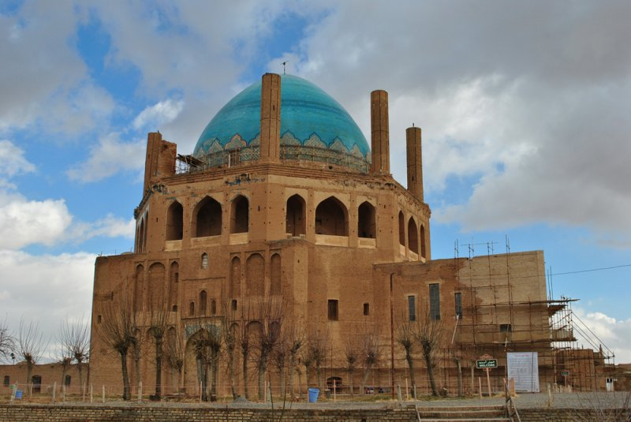

گنبد سلطانیه
گنبد سلطانیه آرامگاه اُلجایتو است که بین سالهای ۱۳۰۲ تا ۱۳۱۲ میلادی به دستور او در شهر سلطانیه (پایتخت ایلخانیان) ساخته شد و از آثار مهم معماری ایرانی و اسلامی به شمار میرود. گنبد سلطانیه در فهرست آثار میراث جهانی به ثبت رسیده است. گنبد این بنا سومین گنبد بزرگ جهان بعد از گنبد کلیسای سانتا ماریا دل فیوره، و گنبد مسجد ایاصوفیه است.
گنبد مزبور در پنج فرسخی سمت شرقی شهر زنجان در داخل باروی شهر قدیم سلطانیه قرار گرفته و بنایی است هشت ضلعی که طول هر ضلع آن ۸۰ گز است. هشت مناره نیز در اطراف گنبد دارد؛ و قدیمیترین گنبد دوپوش موجود در ایران است.
1 / 6